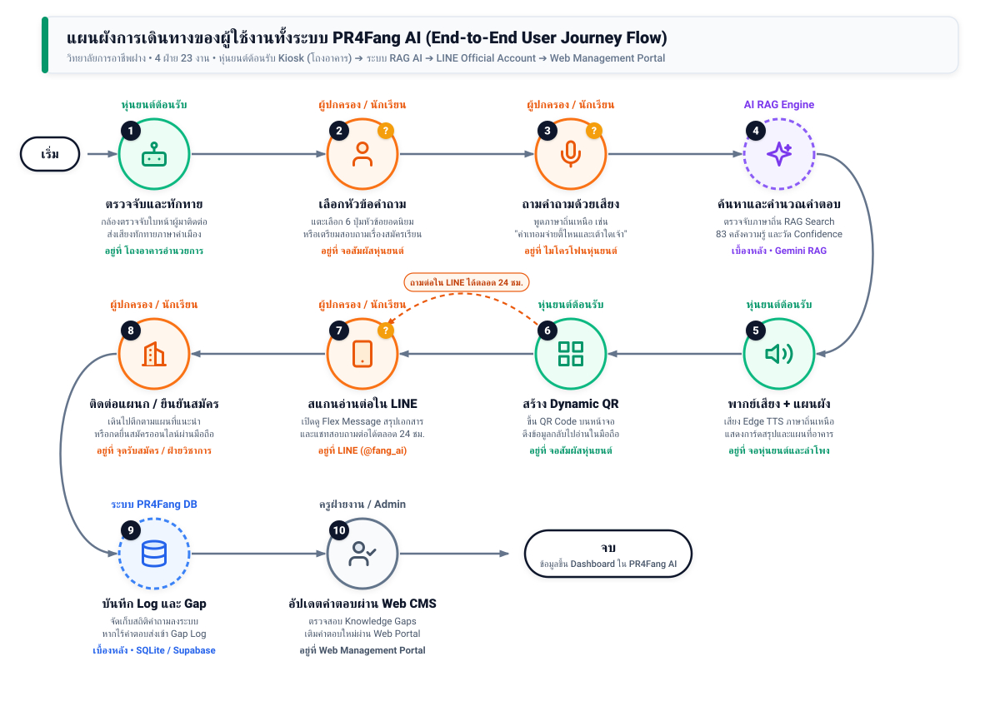

แผนผังการเดินทางของผู้ใช้งานทั้งระบบ (End-to-End User Journey)
ออกแบบเพื่อเชื่อมโยงผู้ใช้งานหน้างาน (ผู้ปกครอง/นักเรียน/ประชาชน) เข้ากับหุ่นยนต์ประชาสัมพันธ์อัจฉริยะ (Robot Kiosk), ระบบ AI Retrieval-Augmented Generation (Gemini RAG), การส่งต่อข้อมูลข้ามช่องทางสู่ LINE Official Account ผ่าน Dynamic QR Code และการปิดวงจรการเรียนรู้ของระบบด้วยการดักจับ Knowledge Gaps เข้าสู่ Web Management Portal ของ 4 ฝ่าย 23 งาน
ภาพที่ 10: แผนผังการเดินทางของผู้ใช้งานทั้งระบบ PR4Fang AI (End-to-End User Journey Flow)
Featured Journey Map
Infographic 10 ขั้นตอนแบบ S-Curve พร้อมจุดเชื่อมโยงข้ามช่องทาง (Omnichannel Flow)

คำอธิบายรายละเอียด 10 ขั้นตอนตามผังการเดินทาง
1
หุ่นยนต์ต้อนรับ (Bot)
ตรวจจับและทักทาย
กล้องตรวจจับใบหน้าผู้มาติดต่อในระยะ 1.5 เมตร ทักทายด้วยเสียงคำเมือง "สวัสดีเจ้า ยินดีต้อนฮับสู่วิทยาลัยการอาชีพฝาง"
ช่องทาง: โถงอาคารอำนวยการ
2
ผู้ปกครอง / นักเรียน
เลือกหัวข้อคำถาม
แตะเลือก 6 ปุ่มหัวข้อยอดนิยม (เช่น การรับสมัคร, สาขาวิชา, ค่าเทอม, แผนที่) เพื่อเริ่มต้นการซักถามอย่างรวดเร็ว
ช่องทาง: จอสัมผัสหุ่นยนต์
3
ผู้ปกครอง / นักเรียน
ถามคำถามด้วยเสียง
กดไมค์แล้วพูดภาษาถิ่นเหนือ เช่น "ค่าเทอม ปวช. จ่ายตี้ไหนและเต้าใดเจ้า" ระบบขึ้น Waveform รับเสียง
ช่องทาง: ไมโครโฟนหุ่นยนต์
4
AI RAG Engine
ค้นหาและคำนวณคำตอบ
ถอดเสียง STT ตรวจจับไวยากรณ์คำเมือง ค้นหาจาก 83 เอกสารความรู้ คำนวณ Confidence Score และตัดสินใจสร้างคำตอบ
ระบบ: Gemini 1.5 RAG
5
หุ่นยนต์ต้อนรับ (Bot)
พากย์เสียง + แผนผัง
สังเคราะห์เสียง Edge TTS สำเนียงภาษาเหนือ พร้อมแสดงการ์ดสรุปประเด็นสำคัญ และแผนผังนำทางไปยังตึก/ห้องทะเบียน
ช่องทาง: ลำโพงและจอแสดงผล
6
หุ่นยนต์ต้อนรับ (Bot)
สร้าง Dynamic QR
แสดง QR Code เชิญชวนให้สแกนนำข้อมูลสรุปและระเบียบการทั้งหมดเข้าสมาร์ทโฟนเพื่อนำกลับไปอ่านต่อที่บ้าน
ช่องทาง: Dynamic QR บนจอ
7
ผู้ปกครอง / นักเรียน
สแกนอ่านต่อใน LINE
เปิดดู Flex Message สรุปเอกสารใน LINE OA (@fang_ai) และสามารถแชทพิมพ์ถามคำถามเพิ่มเติมได้ตลอด 24 ชั่วโมง
ช่องทาง: LINE Official Account
8
ผู้ปกครอง / นักเรียน
ติดต่อแผนก / ยืนยันสมัคร
เดินไปติดต่อห้องงานแนะแนว/ทะเบียนตามแผนที่ที่ได้รับ หรือกดปุ่มยื่นใบสมัครออนไลน์ผ่านลิงก์ใน LINE Chat
ช่องทาง: จุดรับสมัคร / ทะเบียน
9
ระบบ PR4Fang DB
บันทึก Log และ Gap
บันทึกสถิติคำถามลง ai_query_logs หากเป็นคำถามที่ AI ไม่มั่นใจ (Confidence < 0.70) ระบบจะบันทึกลง knowledge_gap_logs อัตโนมัติ
ระบบ: SQLite และ Supabase
10
ครูฝ่ายงาน / Admin
อัปเดตคำตอบผ่าน Web CMS
เจ้าหน้าที่ตรวจสอบคำถามที่ตกหล่นในหน้า Gap Analytics และพิมพ์เติมคำตอบใหม่ผ่าน Web Portal ข้อมูลซิงค์ทันทีทั้งระบบ
ช่องทาง: Web Management Portal